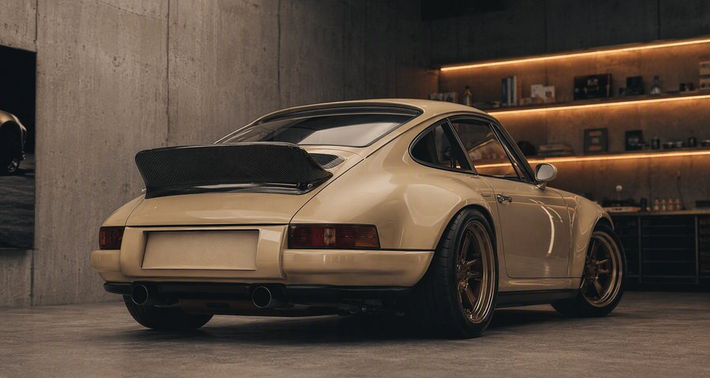
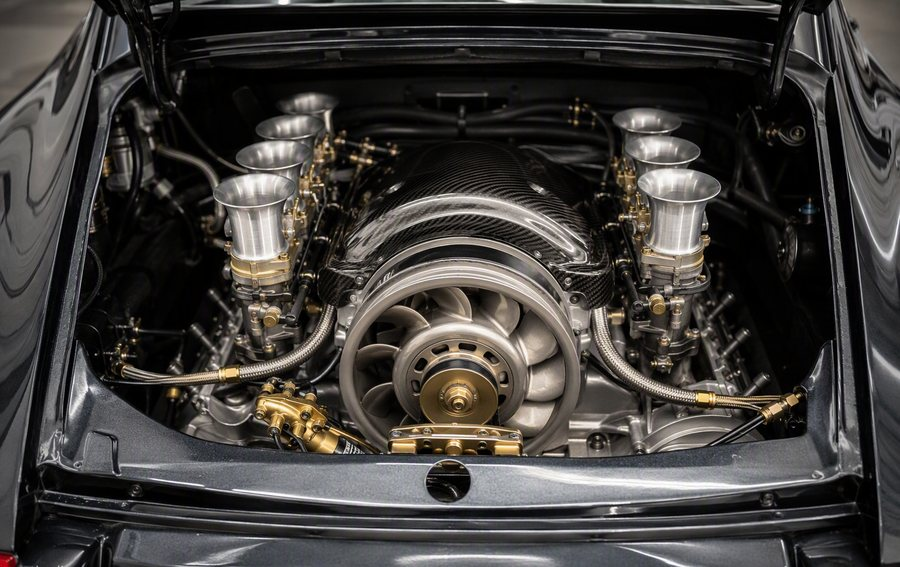

Distance
Built for early departures, long lunches, changing weather and roads that continue after the map becomes less certain.

Antipode Motor Co.
Cars for roads that are worth the drive.
Antipode creates deeply personal air-cooled commissions: restored with patience, shaped by place, and made for the long way home.
Begin a Private CommissionThe Philosophy
Australia changes quickly beneath a car. One hour, salt air and a coastal horizon. The next, rain in the trees. Heat on the plain. A surface that asks more of the suspension, the cooling, the seats and the person behind the wheel. Antipode begins there. We take the enduring shape of an air-cooled 911 and make it feel entirely at home on this side of the world. Not as a replica of the past, but as a car with many more miles ahead of it.
Built for early departures, long lunches, changing weather and roads that continue after the map becomes less certain.
The weight of the steering. The sound behind you. The click of a switch. The details that make a drive memorable.
Each commission is shaped around its owner, then finished to belong to a particular life, collection and corner of the world.

The Car
Every Antipode begins with a 1979 to 1985 air-cooled 911. The proportions remain recognisable: compact, upright, unmistakable. But the experience becomes more complete. The car is restored in its entirety, reconsidered in detail, and tuned to become more involving with every kilometre. Nothing is added simply to announce itself. Everything is considered because it will be touched, heard, seen or relied upon.


The Build
Every commission is built in one workshop in Artarmon, Sydney, by technicians you can meet. It begins as a bare shell. Four decades of wear are corrected, every known weakness of the car is resolved, and the whole is reassembled by the same hands that took it apart. You are welcome at any stage. Most owners come more than once. That is the point.

The Places
The coast after rain. Eucalypt forest before sunrise. A red road at the end of a long day. Antipode is not defined by one landscape. It is defined by the change between them. That is where these cars make sense: not under lights, but in the space between one place and the next.


The Details
A car is never only its outline. It is the cool metal of a gear lever. The first touch of worn leather. The weave of a seat insert. The rise in engine note as the road clears in front of you. Antipode is built around these moments: the small, physical details that turn a beautiful object into a car you know by heart.


The Commission
An Antipode commission begins with a conversation. How will you use the car? Where will it take you? What should it feel like in the first kilometre, and in the thousandth? From there, a collection of choices becomes a coherent whole: the donor, stance, colour, cabin, materials and character. The process is deliberate, collaborative and unhurried. The finished car is not chosen from a list. It is discovered over time.
We meet, and listen. The car begins with the life it will join.
Together we find the donor and agree the character of the car.
The build unfolds in one Sydney workshop, documented throughout.
Certified, registered and handed over in Sydney, or shipped worldwide.
We remain the car's caretakers for as long as you own it.
Commission Terms
Every commission is numbered and entered in the registry. No specification is repeated.
See what is included at each levelOr read the answers to the questions everyone asks first.
The Journal
What a continent asks of a car, what we change and why, and what the validation actually returned. Read all four.
No. 01
Salt air, heat soak, coarse chip. What a continent asks of a car designed for another one.
Place · 6 min read
Read this
No. 02
Galvanised steel, honest supply, and why 1979 to 1985 is the right foundation.
The Car · 7 min read
Read this
No. 03
Leather, wool, brass, aluminium, paint and time. A study in ageing well.
Materials · 5 min read
Read this
No. 04
What we look for in a donor, and what we walk away from.
Process · 6 min read
Read this
Private Enquiries
A limited number of private commissions are now being considered. Tell us where you would take yours.
Begin an enquiryNo deposit, no obligation. Prefer email? commissions@antipodemotor.com